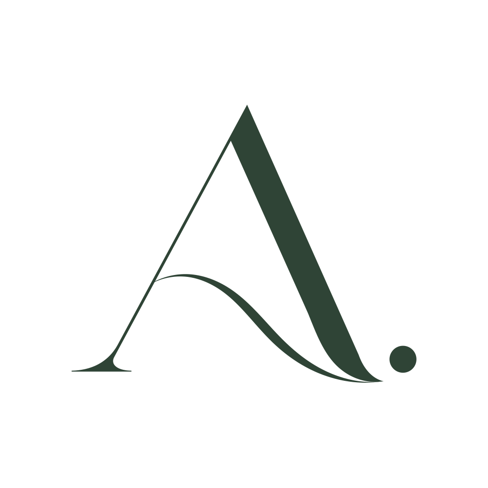

Groups
Small, live, for a little while
Up to six people who lost someone in a similar way, together for two hours. Say as much or as little as you like, and leave quietly at any time.
Messages disappear 15 minutes after the meeting ends.

After is a quiet place to be with it. Meet in a small group for a little while, talk one to one with people you’ve met, and keep what you don’t want to lose. With people who have been there too.
How it works
Everyone in After has been through a loss. They listen as people who understand, not as counsellors.
Groups
Up to six people who lost someone in a similar way, together for two hours. Say as much or as little as you like, and leave quietly at any time.
Messages disappear 15 minutes after the meeting ends.
Talk
After a group, say who you’d talk with again. When they say yes too, you can message each other. On a hard night, ask “Can somebody talk now?”, and someone who’s around and has been through a similar loss can answer.
Nobody can message you unless you’ve both said yes.
Remember
Keep what you don’t want to lose: writing, photos, their voice in an old voicemail, a letter, a recipe. Gentle prompts help when you don’t know where to start.
Only you can see it, unless you choose to share one memory.
Our promise
No AI talks to you, reads your chats, or learns from what you share. Every conversation here is between real people.
Like many small teams, we used AI tools to help design and build the app itself. That never involves anything you share.
Price
Crisis help, groups, Talk and writing are free, always. After+ adds more space for photos, voice notes and videos.
Free, always
€0
After+, later and optional
€2.99 a month, or €24 a year
If you ever stop paying, nothing is locked or deleted. You keep every memory and can still open, share and save them; you just can’t add more files beyond the free space. No ads, ever, and we never sell your information.
Questions
No. After is support from people who have been through a loss too. They listen as people who understand, not as professionals. If you’re in danger, call 999 in the UK or 112 in France and Ireland. Samaritans (116 123, UK and Ireland) and 3114 (France) are there any time, and Help in the app shows them on every screen.
Any loss that changed your life: a parent, a partner, a child, a brother or sister, a friend, a pet, or something that ended, like a marriage. You find groups by loss, so you’re with people in a similar place.
Anyone aged 18 or over. You choose a username; nobody sees your real name, email or number.
In the UK first, then France, on iPhone and Android. Leave your email below and we’ll tell you once, when it opens where you live.
The first 500 people who leave their email get After+ free for a year: 50 GB for photos, voice notes and videos. The email we send when After opens will say how to claim it. After that year nothing is locked; you keep everything, as with anyone who stops After+.
The people you’re talking with, and nobody else. Group messages disappear 15 minutes after each meeting. Your memories are only yours unless you share one. A person on our team reads a conversation only if someone reports it or is worried about someone in it.
Yes. Groups, Talk, Help and writing are free, always. One day there may be an optional After+ for extra storage space for photos and recordings. If there is, nothing you already have will ever be locked.
Tell me when it opens
After opens soon, in the UK first, then France. We’ll send you one email when it opens where you live. That’s all.
Founding members. The first 500 people on the list get After+ free for a year. Your launch email will say how to claim it.